Matemática Discreta
Nessa seção voce irá aprender sobre Lógica Formal e Grafos
Lógica Formal Parte III
Construção de Tabelas-Verdade
1. TABELA VERDADE DE UMA PROPOSIÇÃO COMPOSTA
Dadas várias proposições simples p, q, r, …, podemos combiná-las pelos conectivos lógicos
- ~ Negação
- ^ Conjuncão
- V Disjuncão
- → Condicional (implicação)
- ↔ Bicondicional (bi-implicação)
e construir proposições compostas, tais como:
- P(p, q) = ~ p V (p → q)
- Q(p, q) = (p ↔ ~ q) ^ q
- R(p, q, r) = (p → ~ q V r) ^ (q V (p ↔ ~ r)
Então, com o emprego das tabelas-verdade das operações lógicas fundamentais:
- ~ p
- p ^ q
- p V q
- p → q
- p ↔ q
Podemos construir a tabela-verdade de qualquer proposição composta dada. A tabela-verdade mostrará os casos em que a proposição composta será verdadeira (V) ou falsa (F), de acordo com a combinação dos valores lógicos das proposições simples componentes.
2. NÚMERO DE LINHAS DE UMA TABELA-VERDADE
O número de linhas em uma tabela verdade de uma proposição composta dependerá diretamente do número proposições simples que a compõem, de acordo com o seguinte teorema:
"A tabela-verdade de uma proposição composta com n proposições simples componentes contém 2n linhas."
3. CONSTRUÇÃO DA TABELA-VERDADE DE UMA PROPOSIÇÃO COMPOSTA
Para a construção prática da tabela-verdade de uma proposição composta devemos primeiro contar o número de proposições simples que a ela possui. Se a proposição composta possui n proposições simples: p1, p2, p3,… , pn, então a tabela-verdade irá conter 2n linhas. Posto isto, à 1ª proposição simples p1 atribuem-se 2n / 2 = 2n-1 valores V seguidos de 2n-1 valores F à 2ª proposição simples p2 atribuem-se 2n / 4 = 2n-2 valores V, seguidos de 2n / 2 = 2n-2 valores F, seguidos de 2n / 2 = 2n-2 valores V, seguidos, finalmente, de 2n / 2 = 2n-2 valores F; e assim por diante. De modo genérico, a k-ésima proposição simples pk (k ≤ n) atribuem-se alternadamente 2n / 2k = 2n-k valores V seguidos de igual número de valores F.
Vejamo o exemplo a seguir:
1º - Construção da tabela-verdade da proposição: (p, q) = ~ (p ^ ~ q)
Primeiro passo: Forma-se primeiro as colunas correspondentes às duas proposições simples componentes p e q:
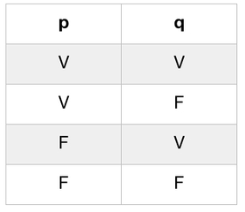Segundo passo: Forma-se a coluna para ~ q:
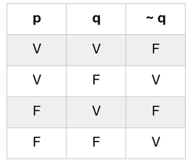Terceiro passo: Forma-se a coluna para p ^ ~ q:
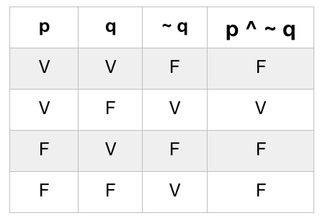Quarto passo: Forma-se a coluna para ~ (p ^ ~ q):
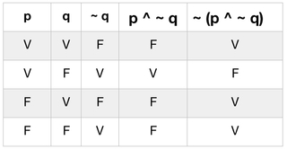
Para a construção das tabelas-verdade é imprescindível ter em mente os resultados das possíveis combinações de valores lógicos de cada conectivo lógico, como o conectivo de negação (~), conjunção (^), disjunção (V), condicional (→) e bicondicional (↔).
Vejamo mais um exemplo:
2º - Construção da tabela-verdade da proposição: P(p, q) = ~ (p ^ q) V ~ (q ↔ p)
Primeiro passo: Forma-se primeiro as colunas correspondentes às duas proposições simples componentes p e q:
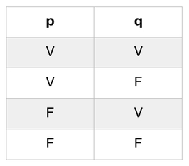Segundo passo: Forma-se a coluna para p ^ q:
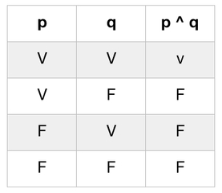Terceiro passo: Forma-se a coluna para q ↔ p:
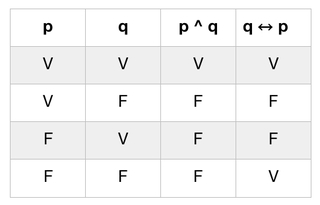Quarto passo: Forma-se a coluna para ~(p ^ q):
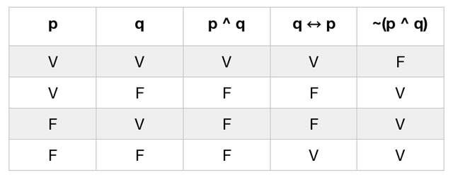Quinto passo: Forma-se a coluna para ~(p ↔ q):
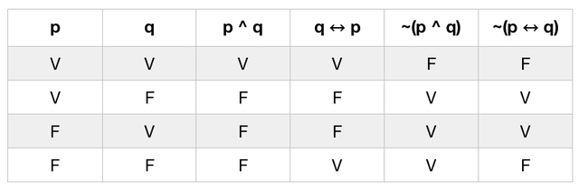Sexto passo: Forma-se a coluna para ~ (p ^ q) V ~ (q ↔ p):
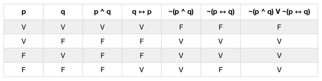
Exercícios
1. Construa as tabelas-verdade das seguintes proposições:
- a) ~ (p V ~ q)
- b) ~ (p → ~ q)
- c) p ^ q → p V q
- d) ~ p → (q → p)
- e) (p → q) → p ^ q
- f) q ↔ ~ q ^ p
- g) (p ↔ ~ q) ↔ q → p
- h) (p ↔ ~ q) → ~ p ^ q
Gabarito
Confira suas respostas
Exercício 1
-
a) ~ (p V ~ q)
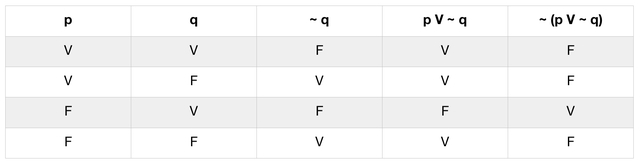 -
b) ~ (p → ~ q)
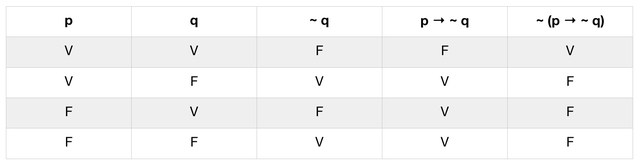 -
c) p ^ q → p V q
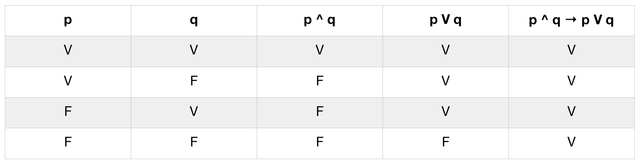 -
d) ~ p → (q → p)
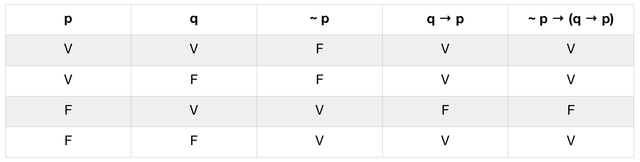 -
e) (p → q) → p ^ q
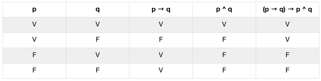 -
f) q ↔ ~ q ^ p
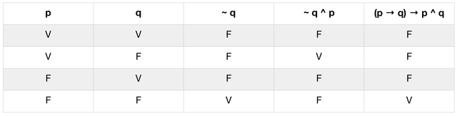 -
g) (p ↔ ~ q) ↔ q → p
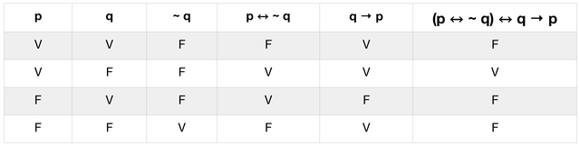 -
h) (p ↔ ~ q) → ~ p ^ q
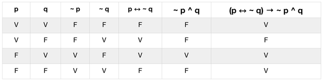